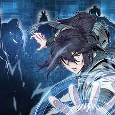

About Me
Veteran turned Software Developer
Sydney Pagalan is a dynamic individual who has transitioned from a successful career in the US Navy to pursue her passion for software development. With a strong work ethic, resilience, and commitment to excellence ingrained from her military service, Sydney is now enrolled in the Software Developer Program at Code Fellows, immersing herself in the world of coding and software development.
Sydney completed a Medical Assistant Program at PIMA Medical Institute and is certified through the Department of Health Washington State.
Fun Fact: When Sydney isn't coding, she loves exploring new hiking trails around the PNW. In her free time, she enjoys gaming and is also a huge fan of the Anime culture.
Sydney is also a proud pet parent to seven cats and one dog, who bring joy and companionship to her life.
Sydney's ultimate goal is to utilize her skills to develop software solutions that address real-world challenges and improve the lives of others.
A bit of a background story...
Born and raised in the Philippines, I made the move to the United States in 2012. However, due to the difference in educational systems, I had to start junior high school again as my high school diploma from the Philippines wasn't accepted. After two years of high school in the US, I enrolled in a local community college for pre-nursing.
A year later, my father, realizing the financial challenges of sending me to college, inquired with the military recruiting office about my eligibility to join. Considering my options, I chose the Navy due to my preference for their uniform. Initially hesitant, mainly because I couldn't swim which my father thought was ridiculous commenting "it's not like the Air Force can fly themselves", I eventually made the decision to join, understanding the opportunities it could provide.
In February 2016, I underwent the rigors of boot camp, an experience that, while I may find foolish now, taught me valuable lessons. After eight weeks, I spent three weeks in Great Lakes, Chicago, learning basic seamanship before being sent to San Diego, California, to join my ship, DDG-102. Shortly after, I embarked on a deployment to the South Pacific, traveling as far as New Zealand and Antarctica. In New Zealand, we engaged in humanitarian efforts following the devastating 2016 Kaikōura earthquake.
After returning from that deployment, I spent a few months in Everett, Washington, before setting out on another deployment, this time to the Pacific and the Middle East. Upon returning to Washington, I finally decided to get a bilateral bunionectomy due to occuring problems, which led to a shore duty rotation of five months. I was then reassigned to a different ship, DDG-101, and embarked on another eventful deployment. We journeyed to the Caribbean, New York, Nova Scotia, and various parts of Europe, including an unforgettable 14-day visit to Norway for our NATO tour.
Following the deployment, the COVID-19 pandemic struck, allowing me to remain on the mainland for a year before preparing for another deployment. However, due to unforeseen circumstances, I made the decision to transition out of the military and pursue my dream of working in the healthcare field. I enrolled in a Medical Assistant program at PIMA Medical Institute in Seattle from 2021 to 2022 and was swiftly hired by Kaiser Permanente.
Now in 2023, I have embarked on a new journey to become a Software Developer at Code Fellows.
Reflecting on my military career, I have undergone a significant transformation. I entered the Navy as an idealistic and caring individual but emerged with a hardened perspective, shaped by the challenges of being a woman in a predominantly male environment. Despite facing obstacles and having to prove myself repeatedly, I harbor no animosity and instead view my experiences as invaluable life lessons. I aim to utilize my knowledge and experiences to help others and serve as an inspiration for those facing similar struggles.
Top 10 Manhwas
-
1. Return of the Mount Hua Sect

The Plum Blossom Sword Saint: Chung Myung" follows the story of Chung Myung, a legendary swordsman and disciple of the Mount Hua Sect. After being revived as a child, Chung Myung discovers that his sect has fallen and sets out to save and restore it, facing numerous challenges along the way.
-
2. Solo Leveling
In a world where hunters, humans who possess magical abilities, must battle deadly monsters to protect the human race from certain annihilation, a notoriously weak hunter named Sung Jinwoo finds himself in a seemingly endless struggle for survival.
-
3. Eleceed
Jiwoo is a kind-hearted young man who harnesses the lightning quick reflexes of a cat to secretly make the world a better place – one saved little child or foster pet at a time. Kayden is a top tier awakener on the run, who finds himself stuck in the body of a…um… decidedly fat fluffy cat.
-
4. Nano Machine

After being held in disdain and having his life put in danger, an orphan from the Demonic Cult, Cheon Yeo-Woon, has an unexpected visit from his descendant from the future who inserts a nano machine into Cheon Yeo-Woon's body, which drastically changes Cheon Yeo-Woon's life after its activation.
-
5. Return of the 8-class Mage
As a powerful 8th class mage, Ian Paige took countless innocent lives under the orders of Emperor Ragnar, a close friend and ruler of the Greenriver Empire. Yet despite their closeness, Ragnar views Ian as a threat and subsequently poisons him. Using time magic, Ian saves himself and returns 30 years to the past.
-
6. I'll be the Matriarch in this life
The Lombardi family, once powerful, faces ruin after the patriarch's death. Firentia, reincarnated as her younger self, strives to protect her family's honor, gain her grandfather's favor, and prevent her father's death. Her sole path to victory is to become the head of the mighty household.
-
7. Villains are Destined to Die
The story follows a girl who reincarnates into an otome game as the adopted daughter, Penelope Eckhart, who is also the villainess! She was taken in to replace the real missing daughter and heroine of the story, Yvonne.
-
8. Villainess turns the hourglass
Aria Roscent mercilessly bullied her stepsister Mielle and paid the ultimate price for her misdeeds―but not before Mielle revealed that she'd manipulated Aria into harassing Mielle in the first place! Instead of dying, Aria is sent back in time and gifted a strange hourglass with mysterious powers.
-
9. Martial Art Villainess is the Strongest
Our main character was an unsuccessful romance fantasy novelist when she gets into a hit-and-run then wakes up as the villainess in a best-selling martial arts novel. She uses the information from the novel that she had analyzed in her original life, in order to avoid her death-ending and finding the truth behind what had really happened to her.
-
10. Remarried Empress
Navier Ellie Trovi, a flawless empress renowned for her intelligence, lived contentedly as the wise ruler of the Eastern Empire. However, her husband's unexpected arrival with a mistress and a demand for divorce disrupts her idyllic life. Despite the shock, Navier accepts the divorce and surprises everyone by remarrying another emperor while retaining her title.